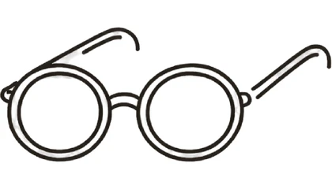
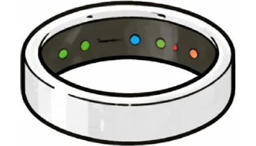
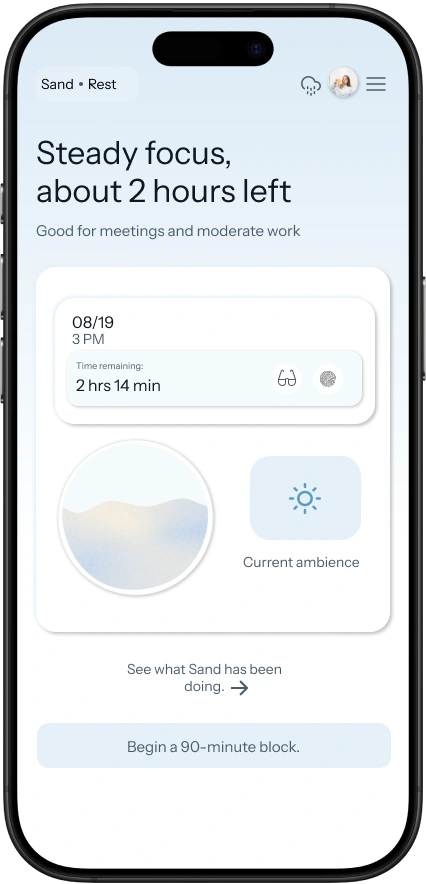

Sand · FigBuild 2026
AR glasses, a ring, and an app that help you feel time.
Sand is a speculative system that helps busy people sense their focus and fatigue as they happen, instead of reading about them the next morning.
The problem
Time rules our lives, and we’re bad at sensing it.
It started when a 10-minute scroll break turned into two hours. Meet Andy, an architecture student with a building to model by Friday. Friday is also the season finale she always watches with her roommates. Seven hours into a studio session, she feels like she has barely started.
The sense Andy is losing has a name: chronoception, our subjective perception of time. It’s why hours can vanish during flow and minutes can drag when we’re bored.
Research
People didn’t want more data. They wanted it in time to act.
We surveyed 36 ambitious students and professionals. Their stories kept landing on the same moment: realizing too late.
preferred real-time support built into their environment.
disliked getting data after they could do anything with it.
were unhappy with how smart trackers feel or look.
“My smartwatch tells me I have a low readiness score after I’ve already woken up tired.”
Survey respondent
The solution
Make time something you can feel again.
Another dashboard would repeat the problem, so we rejected a readiness score and moved the experience into the room around you. If Sand can act in the moment, it doesn’t need to grade you.

Sand ShadesAR glasses read light and attention, then shift the ambiance around you.

RingTracks sleep pressure, HRV, and vagal tone overnight, when glasses come off.

Sand appExplains what Sand is doing and lets you change or turn off any of it.
Three moments
One week with Sand.
First, learn her clock.
Andy estimates when 10 minutes have passed. Comparing that feeling with real time gives Sand a personal baseline.
Then, protect her focus.
When Andy sits down to work, Sand offers deep focus. Distractions dim and notifications dissolve into mist, but she chooses when it starts.
Finally, bring her back.
On Friday, Sand recognizes she’s with friends. Light warms and messages wait, so she can actually be there for the finale.
The app
An ambient system still has to explain itself.
When technology changes your surroundings, trust depends on knowing why. The app follows one day with Sand, from the first calibration to the moment you decide how much it should know.
Try the key interactions
Sand suggests. You decide.
Swipe between modes. If you need rest, Sand won’t let you push into Peak.
Step back from your data.
Hide your numbers, or turn off any signal Sand reads.
Reset your rhythm.
Drag bedtime and wake time around the dial.
See every decision.
Drag across the day to find out what Sand changed and why.
Use the whole app.
Everything in this phone works, so you can move through it the way Andy would.
- Calibrate your sense of ten minutes
- Tap the wave to change modes
- Tap the sun to change the ambience
- Begin a session, then read the recap
- Open the menu to find Mist and Circadian Mode
Edge cases
Designing for the people a wearable can hurt.
People with ADHD or sleep disorders get a baseline learned from their own signals.
If rest is needed, Sand blocks Peak mode instead of rewarding overwork.
People who find biometrics harmful can hide the numbers and keep the benefits.
Reflection
The best interface may be the room you’re already in.
Most wearables turn how you feel into a score, and the score starts to define you. So every feature had to answer one question: does this give people agency, or does it quietly watch them? That question led us to Mist Mode, and to a wearable that disappears into your day instead of grading it.